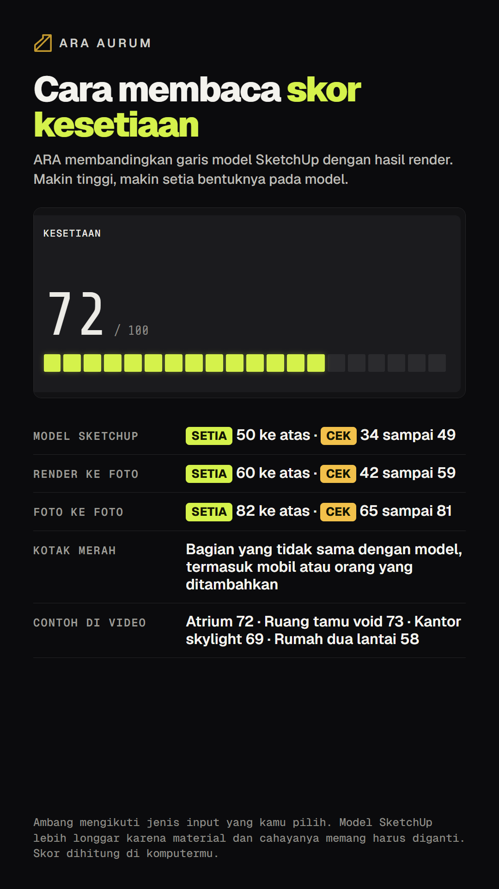

ARA · RESOLUSI PENUHEnglish
Cara membaca skor kesetiaan
Untuk model SketchUp, skor 50 ke atas berarti hasilnya setia pada desainmu. Kotak merah menandai bagian yang berubah.

Untuk model SketchUp, skor 50 ke atas berarti hasilnya setia pada desainmu. Kotak merah menandai bagian yang berubah.
